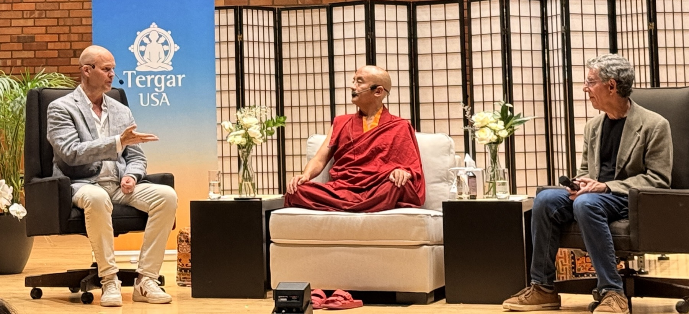

We went looking — from the Dalai Lama’s monasteries in Dharamshala to a chaplaincy at Rikers Island — and found the same answer in both rooms.
Stress, loneliness, numbness — and always within reach, a perfectly engineered fix: the scroll, the drink, the cart. Instant. Personalized. Frictionless. These aren’t bad habits; they’re the most sophisticated behavioral technology ever built — engineered for nervous systems that are already cornered.
Contemplative practice wins the same moment, and has for three thousand years. It builds what the quick fixes only counterfeit: agency, meaning, connection. It just never got a delivery system.
Meditation apps, breathwork, cold plunges, gratitude journals, sound baths — they are all teaching self-regulation. Essentially Buddhism, branded differently. Even the scroll, the drink, the cart: attempts at self-regulation that don’t work. People feel crappy and they just want to feel better.
The barrier isn’t belief — it’s translation. People never receive this wisdom in a form their skepticism, their nervous system, or their worst moment can accept. This project builds the translation layer — empathy as the method, science as the passport — and delivers the felt shift — the shift you can feel. Not a film about meditation. The delivery system the medicine never had.
Before/after neuroscience on real audiences: watch it happen in your own body and brain.
The adoption lever the wellness industry never had.
Testing what the nervous system will actually accept: story, sound, rhythm, synchrony, breath.
This film could not have been made twenty years ago. The wisdom is ancient; the proof is brand new.
A five-element storytelling architecture: Buddhist wisdom traditions · Jungian psychology · the Hero’s Journey · modern neuroscience — and the fifth element, empathy, the integrative force that lets perception shift. The most underrated tool of personal actualization.
Meditation only reached the West when it was repositioned as universal, scientific, non-religious. This film applies the same translational move to empathy: from misunderstood emotion to measurable core human technology — oxytocin up, cortisol down, self- and co-regulation restored.
The Dalai Lama has collaborated with neuroscientists at Harvard, Stanford, Wisconsin, Columbia, UCSD, and Emory for over 25 years. Emory’s compassion-measurement program has trained 77M+ people in 24 countries — with measured outcomes in stress, depression, anxiety, and anti-stress biomarkers.
Real people — monks and maximum-security prisoners, doctors, artists, mothers, fathers — facing life’s beautiful, brutal, in-between.
Every piece is both medicine and instrument: documentary segments, original score, breath-paced and binaural sound, contemplative visual art — built, measured, revised, tested. We don’t make media and hope. We run a measured intervention with a film as its instrument.
Executive Producer, Writer, Story Architect. WSJ bestselling author (Empathy in Action, 15 industry awards), PhD scientist (UCLA). The through-line: proving the soft thing can be measured — first for business, now for being human.
Director-Cinematographer. Award-winning filmmaker (8 festival wins for Something in the Clouds); collaborations spanning Snoop Dogg, Jimmy Jam & Terry Lewis — 1B+ streams. Crain’s 40 Under 40.
Musical Director, Sonic Architect. Multi-platinum, Grammy-nominated; producer on Justin Bieber’s 2025 album Swag; Van Gogh: The Immersive Experience; founder, Frequency Music School. Recording studio at the Dalai Lama’s school.

Scientific Advisory Board — neuroscience, psychology, contemplative science, human-centered AI: Jason Snell · Kimi Doan · Paul Zak, PhD · Jessizza-Pade · Paul Edge, PhD · Kirsty Allan, PhD · Dr. Thompson · Kelly Bollman · Jacob Marshal. Research lineage: Harvard, Stanford, Wisconsin, Columbia, UCSD, Emory. Footage in hand: 20+ TB across four Dharamshala shoots, the monk-and-scientist sessions, Rikers chaplaincy.
The measurement plan is written and submitted: every element of the film — segments, narration, original music, chanting, breath-paced sound, neuroacoustic and binaural elements, contemplative visual art, guided reflection — is treated as a research stimulus, alone and in combination. Prototyped, measured, revised, tested.
Effects on self-regulation and co-regulation — for individuals, couples, families, friends, and communities — short- and long-term, and why.
A replicable evidence base for artists, contemplative teachers, educators, and community leaders — showing how their work changes lives, for whom, and under what conditions. Sponsor-ready case studies, third-party validated.
Measurement plan per the Templeton Foundation proposal, submitted July 2026. Co-regulation is the wedge: a room full of nervous systems settling together is the one thing the scroll can never offer.
A worldwide network — researchers, well-being organizations, practitioners, educators, artists, community leaders — is screening prototypes and shaping the work right now. They are our collaborators. When the film is ready, they are our distributors.
The question every producer fears — “will anyone watch?” — was answered before a frame was shot.
Event-based community screenings, curricula, and measured impact outlive the release window.
Event-based, measured, community-hosted.
Licensing to schools, orgs, corporate well-being.
Subscription soundtrack — binaural, breath-paced.
Music + wellbeing events and retreats — recurring, return-customer, not a one-time museum piece. Network partners ready: Taylor Renee (LA event producer, LCSC.LA), Jimmy Bell (DJ — events & retreats).
Empathy-brand apparel — neuroscience-curated materials, with collaborator Suz (dinoapparel.com botanic line). Community pre-commitment.
Authority engine feeding every other stream.
Plus immersive installation and traditional distribution (SVOD · AVOD/FAST · TVOD). Conservative projections per the project one-sheet: revenue $0.25M (2026) → $5.2M (2031), EBITDA-positive from 2027.
Four lanes open: grants (Templeton Foundation proposal, submitted July 2026) · equity · brand sponsorship · tax-deductible donations via fiscal sponsor From the Heart Productions (501c3). How to Be a Good Human, a Delaware Public Benefit Corporation. Final budget detail available under NDA.
Final Dharamshala shoots — the powerful women of the Dalai Lama’s inner circle, His Holiness’s message for the film, the student recording studio. US shoots — the Dalai Lama’s neuroscientists, the Rikers Island chaplaincy. Music — original score and sonic-healing architecture, licensing, production.
Post-production to Netflix delivery readiness — edit, color, sound design. Third-party health-impact measurement with sponsor-ready case studies. Social impact campaign, DIFF sponsorship, global marketing prep. Impact philanthropy: sponsoring children in exile, the student studio, their music in the film. Detailed line budget under NDA.
“Not because I’m right — but because of how the human operating system is designed.”
— Dr. Natalie Petouhoff
Empathy: The Pursuit of Joy · Ancient wisdom, proven by science · Film completion Aug ’26 · Premiere: Dalai Lama’s Dharamshala International Film Festival (DIFF), Nov ’26 · Our journey — and now yours.